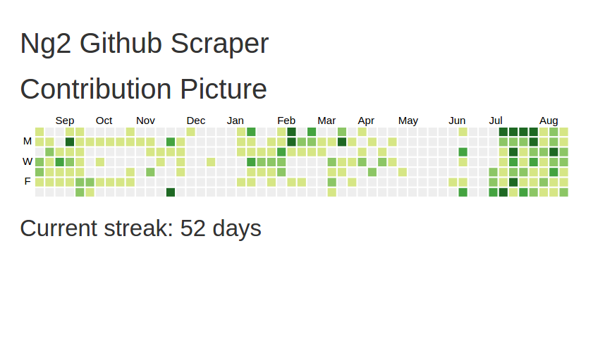

Ng2-Github-Scraper
Angular 2 application to scrape github profile and build current streak
 Github Link
Angular2-Nodejs-Seed
Seed starter project for MEAN stack using Angular 2. Includes custom gulp tasks for build and developement and browsersync for live reload.
Github Link

Music building Recital Attendance
Login system used to track Student's attendance to recitals at the Unversity of Florida School of Music. Built using Python and the Django framework.
Limited-access Homepage